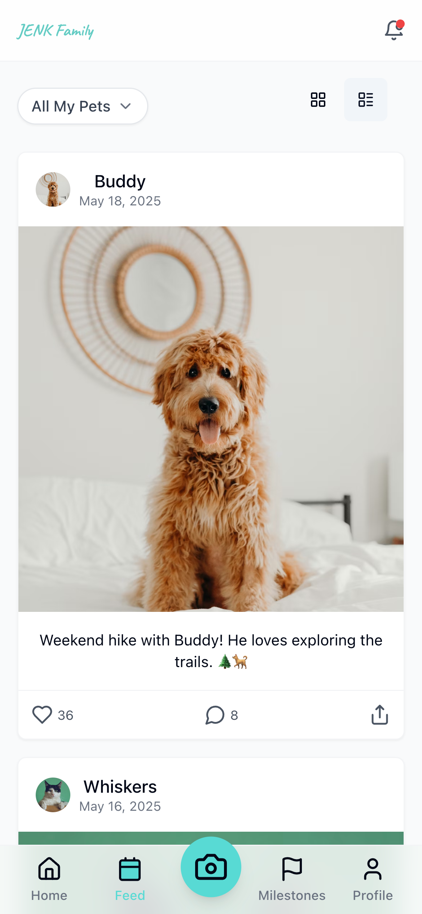
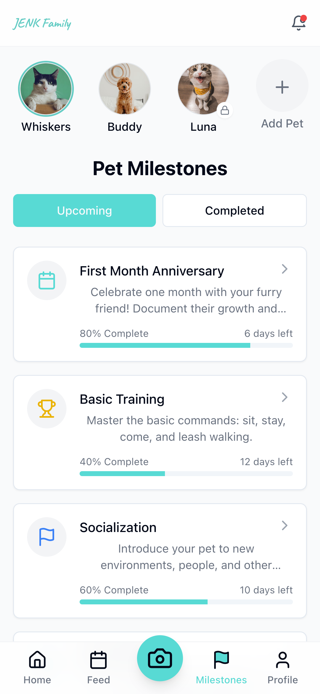
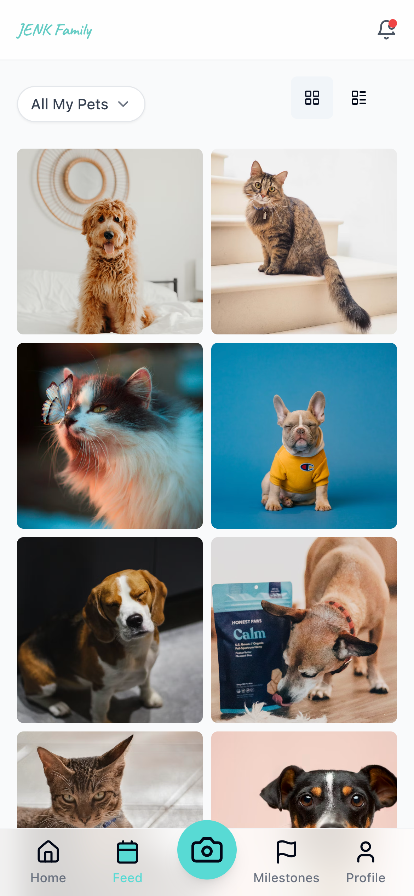

Give Your Pet's Story the Home It Deserves
Every playful leap, gentle nuzzle, and quiet moment of companionship weaves the unique story of your pet's life. TinyPaws creates a beautiful home for these precious moments to live together.
A Complete Story
Keep all your pet's memories in one beautiful place, organized chronologically to tell their complete life story.
Rich Context
Capture not just photos but the stories, dates, and special moments that make your pet unique.
Your pet's journey, beautifully preserved
TinyPaws creates a beautiful, organized timeline that brings together photos, videos, milestones, and stories in one place you can revisit whenever you need a smile.


